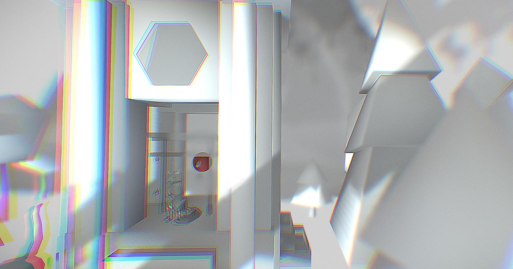
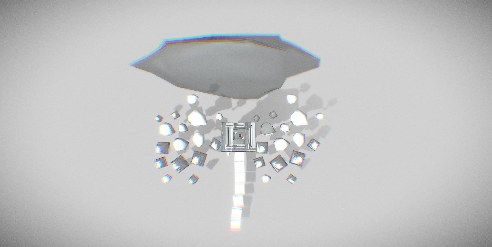
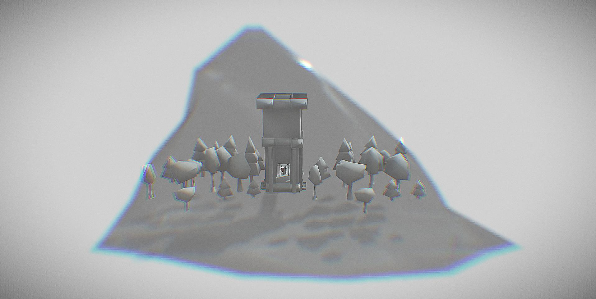
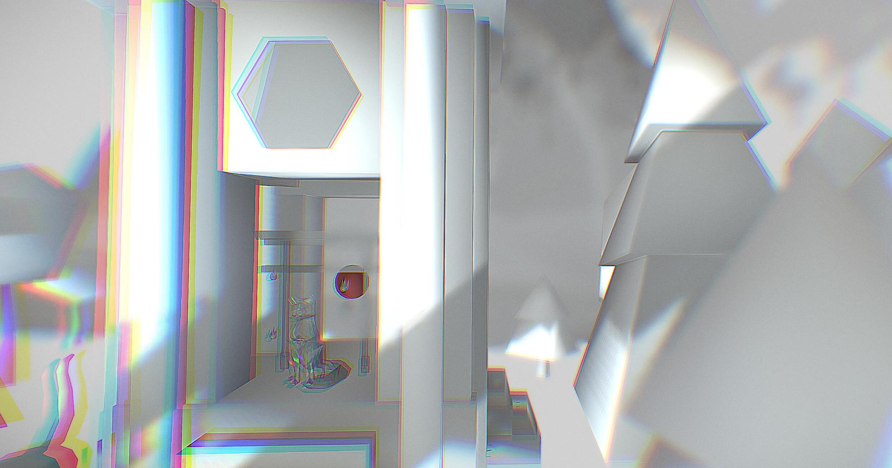
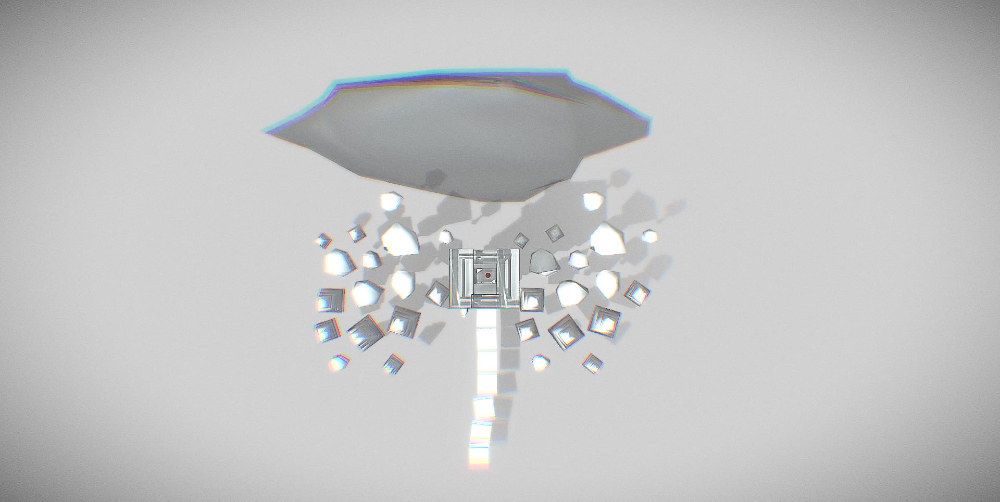
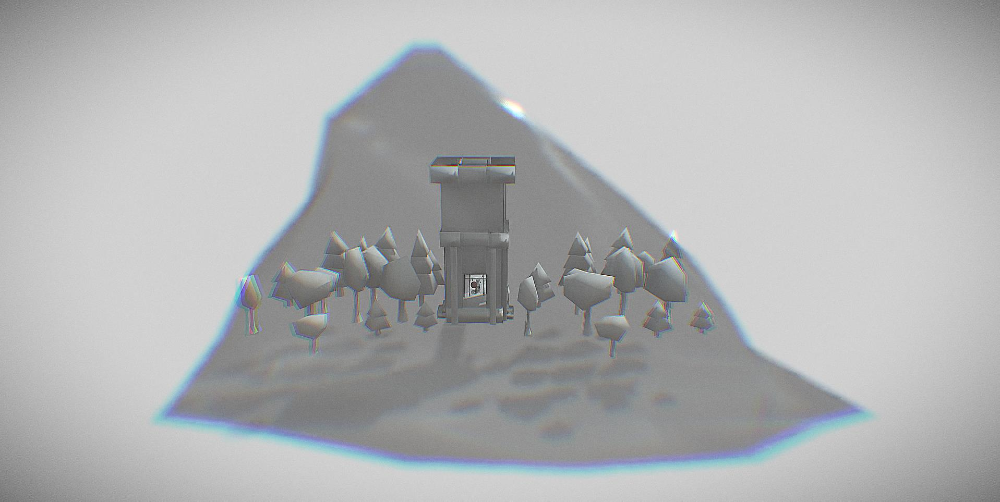
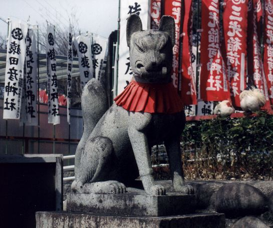

🏡
🖼
📷
Fushimi Inari-taisha
 





Description
Fushimi Inari-taisha is a temple located in Fushimi-ku, Kyoto,Japan. Inari Ōkami is a Kami(God) of Fushimi Inari-taisha. Inari Ōkami is the God of foxes, of fertility, rice, tea and sake, of agriculture and industry, of general prosperity and worldly success[citation needed], and one of the principal kami of Shinto. I added the sounds of ringing bell in the model because this sound effect gives me a sense of calmness and that's what I want my audiences to felt too.
By Paul Vlaar - http://www.neep.net/photo/japan/show.php?8117 [dead link]English Wikipedia, original upload 9 March 2005 by Neep, CC BY-SA 3.0, https://commons.wikimedia.org/w/index.php?curid=326471

By en.Wikipedia: Werewolf - Picture is taken from en.Wikipedia, CC BY-SA 3.0, https://commons.wikimedia.org/w/index.php?curid=483003